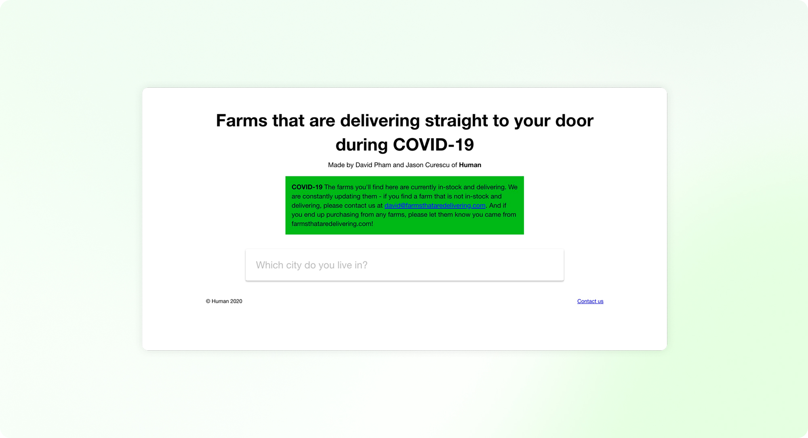
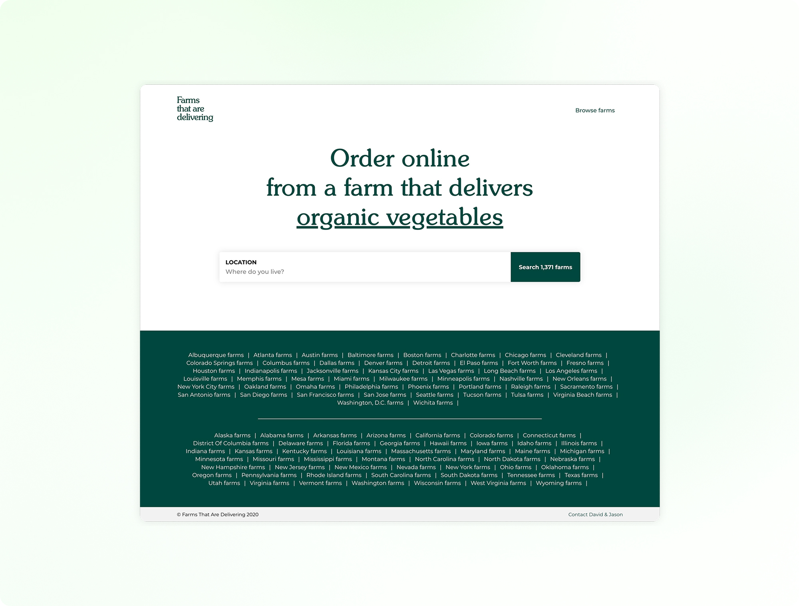
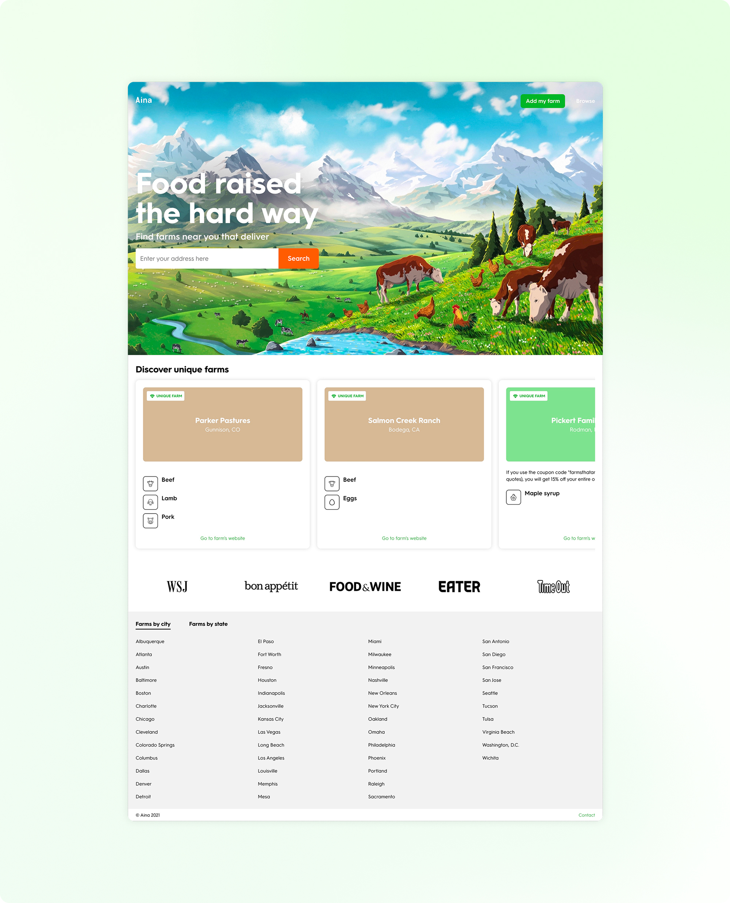

In the beginning of the COVID-19 pandemic when grocery stores were struggling to keep shelves stocked, many people didn't realize that local farms still had plenty of fresh food available. They just didn't have a way to reach consumers directly. At the same time, small farms were losing restaurant and wholesale business and needed new ways to sell their products. Aina was created to close that gap, making it easy for people to discover nearby farms and shop from them directly, without middlemen.

We first launched in April 2020 under the name Farms That Are Delivering, starting with a simple list of local farms around New York City offering direct-to-door delivery. The initial site was intentionally minimal with just a search bar where users could enter their address and instantly see nearby farms. It was clean, focused, and designed to get people what they needed, fast.

As the site gained traction on social media and in the press, traffic took off. We were reaching over 1 million searches within the first three months. We reviewed more than 15,000 farms across the U.S. and hand-curated a directory of around 1,300 that offered local or nationwide delivery. For each one, we captured detailed information from product offerings to animal feed, breed, and butchering methods. As we dug into user behavior, we noticed a shift: people didn't just want to search, they wanted to browse. That insight shaped our next design update, where we added city and state-based categories for easier exploration. We also introduced a rotating headline to highlight what was possible to search, helping users instantly understand the full range of the site.

As we continued to grow, we rebranded as Aina which means Hawaiian for 'land' or 'earth'. We began evolving the site with a more intentional focus on user experience. We refined the search flow, adjusted the design based on user behavior, and introduced features for both farmers and customers. With more farms reaching out to join, we added an 'Add My Farm' feature that let them create accounts and list their own products. On the customer side, we highlighted standout farms doing things differently like Parker Pastures, where cows graze year-round on Colorado's wild grasses, or Lava Lake Lamb, where sheep roam freely across a million acres in the Rockies. These curated spotlights helped users connect with the values behind the food and brought a richer, more story-driven experience to the platform.
Responsibilities
Product strategy & leadership
UI/UX design & product development
User research & validation
Branding & marketing
Results
Over 1 million searches
Curated 1,300+ farms
Enabled farmer participation
Introduced story-driven content